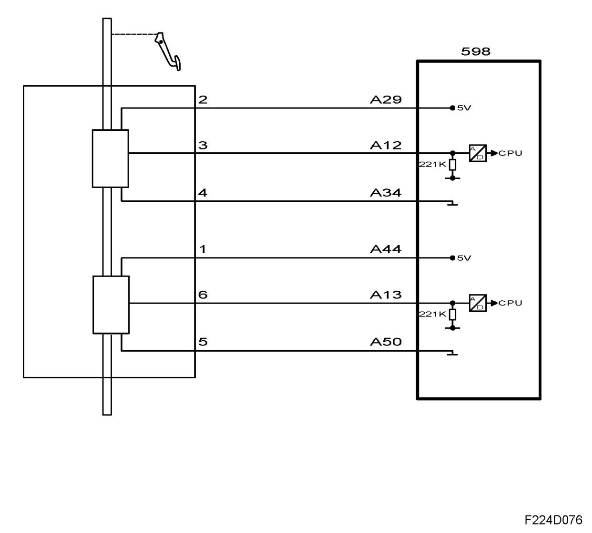

Pedal Request
Pedal Request

The pedal position sensors consist of two potentiometers supplied 5 V from control module pins 29 (A) and 44(A). The sensors are grounded from control module pins 34(A) and 50(A).
The voltage from sensor 1 is connected to control module pin 12(A) and increases when the pedal is depressed, approx. 0.5-4.5 V.
The voltage from sensor 2 is connected to control module pin 13(A) and increases when the pedal is depressed, approx. 0.3-2 V.
The control module uses the value from sensor 1 as an indicator of the driver's torque request. The value is converted into requested air mass/consumption and constitutes the most important input signal for air mass control.
The value from potentiometer 2 is used to check potentiometer 1. If the values are not in agreement then a fault code will be generated and the pedal sensor will go into limp-home mode.
When the pedal is fully released, the control module adapts the voltage from sensor 1. When the accelerator is fully released, the requested air mass/consumption = 0 and if the car speed = 0 also, the idle speed control will be activated.